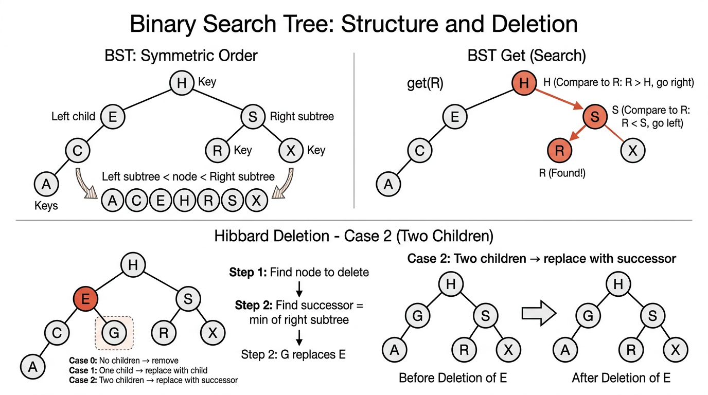

Symbol Tables & Binary Search Trees — COMP0005 Algorithms¶
Lecture-style notes. A symbol table (dictionary / map) is one of the most used abstractions in computing. This topic connects ordered data, search structures, and the first tree-based implementation whose performance depends on shape — setting up balanced trees and hash tables later in the course.
1. COMPLETE TOPIC SUMMARIES¶
Symbol Table ADT¶
A symbol table stores key–value pairs and supports lookup and update by key. The same idea appears under many names: associative array, dictionary, or map.
Core operations (minimal story):
put(key, value)— associatevaluewithkey(insert or overwrite).get(key)— return the value forkey, or signal “not found”.
Standard assumptions (as in typical COMP0005 treatments):
- Keys are unique — at most one value per key at any time.
- Values are non-null — simplifies reasoning; “delete” is modeled by removing the key (or using a sentinel) rather than storing
nullas a value. - Keys are totally ordered — you can compare any two keys with
<,>,==. Formally, the order is antisymmetric (if \(a \le b\) and \(b \le a\) then \(a = b\)), transitive, and total (any two keys are comparable).
Why order matters: Binary search on arrays and BST navigation both need a consistent comparison rule. Without a total order, you cannot “go left or right” in a BST in a well-defined way.
Typical applications:
- Dictionary — word → definition.
- Book index — term → page list.
- Web search — query → ranked results (conceptually).
- File systems — path → metadata / inode.
- Financial accounts — account id → balance.
Elementary Implementations¶
Linked list & sequential search (unordered)¶
Maintain an unordered linked list of nodes, each holding (key, value).
get(key)— scan the list until you find a matching key → \(O(N)\) in the worst case (and \(\Theta(N)\) if the key is absent and you must scan all).put(key, value)— scan: if the key exists, update the value; otherwise insert a new node (often at the front for \(O(1)\) physical insert after the scan) → \(O(N)\) because of the search.
Pros: Simple, \(O(1)\) extra memory beyond storing the pairs, easy inserts after locate. Cons: Search does not improve with \(N\) — unacceptable for large tables.
Ordered array & binary search¶
Keep parallel arrays keys[] and values[] with keys sorted in ascending order.
get(key)— binary search onkeysto find indexiwithkeys[i] == key, then returnvalues[i]→ \(O(\log N)\) comparisons (and array accesses in typical implementations).put(key, value)— binary search to find the insertion position; if key exists, overwritevalues[i]; else shift all elements from that index to the end rightward by one to make space (insertion in a sorted array) → \(O(N)\) in the worst case because shifting is linear.
Pros: Fast search, simple memory layout, cache-friendly for search. Cons: Expensive updates (insert/delete) due to shifting.
Big picture: You have traded \(O(N)\) search (list) for \(O(\log N)\) search (array), but insert remains linear unless you use a different structure.
Binary Search Tree (BST)¶
A binary search tree is a binary tree where each node stores a key (and usually a value), and the keys satisfy symmetric order:
- Every key in the left subtree is strictly less than the node’s key.
- Every key in the right subtree is strictly greater than the node’s key.
Equivalently (and the phrasing you will see in lectures): each node’s key is larger than all keys in its left subtree and smaller than all keys in its right subtree. This global invariant is stronger than only comparing to the immediate children — it constrains whole subtrees.

{kind=link}
Important: Many different BST shapes can represent the same set of keys; insertion order determines shape.
BST node implementation (Python sketch)¶
class Node:
def __init__(self, key, value):
self.key = key
self.value = value
self.left = None
self.right = None
The tree is referenced by a root pointer; an empty tree is None.
get (search)¶
Start at the root. Compare key with node.key:
- Equal → hit; return
node.value. - Less → recurse / move to
node.left. - Greater → recurse / move to
node.right. Nonereached → miss.
Cost: Proportional to depth of the node (or would-be leaf): \(1 + \text{depth}\) pointer hops / recursive calls in a simple model.
put (insert)¶
Traverse exactly like get.
- If you find a node with the same key → update its value.
- If you fall off the tree (
None) → attach a newNode(key, value)at the position where the search expected a child.
Cost: \(1 + \text{depth}\) to the insertion point.
BST shape and performance¶
- Best case (balanced): height \(\Theta(\log N)\) → search/insert \(\Theta(\log N)\).
- Average case (random insertion order, informal): height is \(O(\log N)\) with high probability; constants matter in practice.
- Worst case: keys inserted in sorted order → tree becomes a “spine” (like a linked list) → height \(N-1\) → \(\Theta(N)\) per operation.
Exam mantra: BST time is \(O(h)\) where \(h\) is height; \(h\) ranges from \(\lfloor \log_2 N \rfloor\) (best) to \(N-1\) (worst).
BST ordered operations¶
Assuming symmetric order, you can support order statistics and range reasoning:
min()— walk left untilleftisNone; that node is the minimum key.max()— walk right untilrightisNone.- In-order traversal — recursively visit left subtree, then current node, then right subtree. This visits keys in strictly ascending order (for distinct keys).
floor(k)— the largest key in the tree that is \(\le k\) (or “not found” if all keys are larger thank).ceiling(k)— the smallest key that is \(\ge k\).
How to think about floor/ceiling: Walk like get, but carry a candidate answer when you take a turn that might still allow equality on the other side — classic exam trace material.
BST delete operations¶
Delete minimum (delMin)¶
The minimum is the leftmost node. Delete it by:
- If
node.left is None, this node is the minimum; returnnode.right(may beNone) to splice out the node. - Else
node.left = delMin(node.left)and returnnode.
This preserves symmetric order because the minimum has no left child, so its right subtree (if any) contains only larger keys and can replace it.
Hibbard deletion (general delete)¶
Three structural cases when deleting the node x that holds key:
- Case 0 — no children: remove
x(parent link becomesNone). - Case 1 — one child: replace
xwith its sole child (left or right). - Case 2 — two children: let
tbe the node to delete. Find the successor: the minimum node int.right(smallest key greater thant.key). That successorshas no left child. Replacet’s key/value withs’s, then delete the old successor from the right subtree usingdelMin(t.right)(or an equivalent splice).
Why successor? It is the next key in sorted order, so promoting it keeps all left keys \(< s.key\) and all right keys \(> s.key\) consistent with symmetric order.
def delete(x, key):
if x is None:
return None
if key < x.key:
x.left = delete(x.left, key)
elif key > x.key:
x.right = delete(x.right, key)
else:
if x.right is None:
return x.left
if x.left is None:
return x.right
t = x
x = min_node(t.right) # successor: min of right subtree
x.right = delMin(t.right)
x.left = t.left
return x
(Here min_node is the helper that returns the node found by walking left; slide code often inlines that logic.)
Important caveat: Repeated Hibbard deletion can unbalance the tree over long random operation sequences — average height may grow like \(\Theta(\sqrt{N})\) in some models, which is why the summary table quotes \(\sqrt{N}\) for average delete cost in a long-run shape sense. Balanced BSTs (later topic) fix this.
Performance summary (as in course tables)¶
Let \(N\) be the number of keys.
| Structure | Worst search | Worst insert | Worst delete | Avg search | Avg insert | Avg delete |
|---|---|---|---|---|---|---|
| Sequential search (unordered list) | \(N\) | \(N\) | \(N\) | \(N/2\) | \(N\) | \(N/2\) |
| Binary search (ordered array) | \(\lg N\) | \(N\) | \(N\) | \(\lg N\) | \(N/2\) | \(N/2\) |
| BST | \(N\) | \(N\) | \(N\) | \(c \log N\)* | \(c \log N\)* | \(\sqrt{N}\)† |
* “Average” here assumes random insertion order / good shapes; constants \(c\) absorb base-2 vs natural log factors depending on the lecturer’s convention.
† Hibbard deletion can skew the tree over time; \(\sqrt{N}\) is the order of average height (hence search/insert cost) after many random insert/delete operations in standard textbook analyses — not a hard \(O(\sqrt{N})\) for a single delete step, but a long-run structural warning.
2. EXAM-STYLE QUESTIONS (WITH MODEL ANSWERS)¶
Q1 — Symmetric order¶
Question. Insert keys 10, 5, 15, 3, 7 into an initially empty BST (standard put). Draw the tree. Then state whether a BST with keys {3,5,7,10,15} must have this shape.
Model answer. Standard insertion yields root 10, left 5, right 15, 3 and 7 as left/right children of 5. Many shapes are possible for the same multiset of keys — e.g. root 7 with different left/right splits — so the tree is not unique; only in-order order of keys is forced (here \(3<5<7<10<15\)).
Q2 — get and put cost¶
Question. Explain why BST get and put are \(O(h)\) where \(h\) is height. Give an insertion order of keys 1..N that forces \(h = N-1\).
Model answer. Each step moves one level down (left or right) until hit or None — at most \(h+1\) nodes on a root-to-leaf path. Sorted insertion order 1,2,3,\ldots,N (or reverse) produces a right-only (or left-only) chain, so \(h = N-1\) and operations are \(\Theta(N)\).
Q3 — Ordered operations¶
Question. Define floor(k) and ceiling(k) for a BST with distinct keys. For the tree in Q1, what are floor(6) and ceiling(6)?
Model answer. floor(k) is the largest stored key \(\le k\); ceiling(k) is the smallest stored key \(\ge k\). In that tree, floor(6)=5, ceiling(6)=7.
Q4 — Hibbard delete trace¶
Question. Delete 5 from the BST of Q1 using Hibbard deletion. Show the successor choice and the resulting tree.
Model answer. Node 5 has two children; successor is min of right subtree → 7. Replace 5 by 7, then delMin on old right subtree removes the old 7 node (its left is None, splice in its right, here None). Result: root 10, left child 7 with left 3, right 15. Keys remain \(3<7<10<15\); symmetric order holds.
Q5 — Array vs BST trade-offs¶
Question. Compare ordered array + binary search vs BST for get, put, and memory, in big-O terms.
Model answer. Search: both \(O(\log N)\) in the best/array case and balanced BST case; BST worst \(O(N)\) vs array \(O(\log N)\). Insert: array \(O(N)\) due to shifting; BST \(O(h)\) — \(O(\log N)\) balanced, \(O(N)\) skewed. Memory: array stores two parallel arrays tightly; BST stores pointers per node (extra space for links) but no shifting on insert. Takeaway: arrays win static search-heavy workloads; BSTs win dynamic insert/delete if height stays small — hence balancing later.
3. MUST-KNOW KEY POINTS¶
- Symbol table = key → value with
get/put; keys unique, values non-null, keys totally ordered. - Unordered list:
get,put\(O(N)\) (search dominates). - Ordered array:
get\(O(\log N)\) via binary search;put\(O(N)\) due to shifting. - BST invariant: symmetric order — all left keys \(<\) node key \(<\) all right keys (subtree-level statement).
get/putfollow the same path; cost \(O(h)\).- Shape depends on insertion order; sorted insertion → height \(N-1\).
- In-order traversal outputs keys in sorted order.
min/max: extreme left / right walks.floor/ceiling: definitions + search with candidate pattern.delMin: splice minimum (no left child) by returning right link.- Hibbard delete (two children): successor = min of right subtree, copy,
delMinon right. - Performance table: know worst vs average rows; Hibbard → long-run imbalance (\(\sqrt{N}\) average height story).
4. HIGH-PRIORITY TOPICS¶
🔴 Must Know¶
- ADT:
put,get, assumptions on keys/values/order - List vs ordered array: which operation is \(O(\log N)\) vs \(O(N)\) and why (scan vs binary search vs shift)
- BST symmetric order (subtree formulation, not just parent/child)
get/puttracing on small trees- Height \(h\) drives cost: best \(\Theta(\log N)\), worst \(\Theta(N)\)
- In-order traversal → sorted keys
delMinand Hibbard three cases; successor rule- Summary table (search/insert/delete worst and typical averages)
🟡 Important¶
floor/ceilingdefinitions and small traces- Non-uniqueness of BST shape for a fixed key set
- Why successor works in deletion (next in sort order)
- Pointer / object overhead of BST vs compact arrays
- Applications list (dictionary, index, file system, accounts) — one-sentence each
🟢 Useful but Lower Priority¶
- Formal order axioms (antisymmetry, transitivity, totality) — recognise names
- Exact constants in “\(c \log N\)” average-case statements
- Detailed proofs of \(\sqrt{N}\) height under random Hibbard deletion (know qualitative lesson: unbalanced over time)
- Predecessor-based deletion variant (symmetric to successor) as enrichment
5. TOPIC INTERCONNECTIONS & BIGGER PICTURE¶
- Binary search on a sorted array and BST search are the same decision pattern: each comparison eliminates half of the remaining possibilities only when the structure is balanced — arrays enforce dense order; BSTs encode order in links.
- Elementary sorts and in-order BST traversal both connect to sorted order; merging sorted sequences (MergeSort) is a different “order” idea but trains the same muscle: invariants about sorted segments.
- This unit is the bridge from fixed-size / shifting structures to pointer-based structures whose analysis needs tree height.
- Failure mode (skew) motivates balanced BSTs (AVL, red-black, B-trees) and hash tables — different ways to restore \(O(\log N)\) or \(O(1)\) expectations.
- Symbol tables underpin sets (ignore values or use trivial values), graphs (adjacency maps), compilers (symbol environments), and databases (indexes).
6. EXAM STRATEGY TIPS¶
- Trace first, formula second: For BST questions, draw the tree after each
putordelete— marks follow the correct shape. - State the invariant: When asked “why is this still a BST?”, cite symmetric order on subtrees, not just local parent checks.
- Deletion: Name the case (0/1/2 children) before executing Hibbard; explicitly identify successor as min of right subtree.
- Complexity: Always tie BST running time to \(h\); then give \(h=\Theta(\log N)\) vs \(h=\Theta(N)\) scenarios.
- Compare structures using the table: examiners like “ordered array vs BST” for dynamic vs static workloads.
- Floor/ceiling: If confused, list keys in sorted order from an in-order walk and read off answers — fast sanity check.
These notes align with standard COMP0005-style treatments of symbol tables and BSTs (Sedgewick/Wayne-flavoured). Follow your lecturer’s exact conventions for \(\log\) base, “average case” assumptions, and the \(\sqrt{N}\) Hibbard-deletion remark if their slides differ.